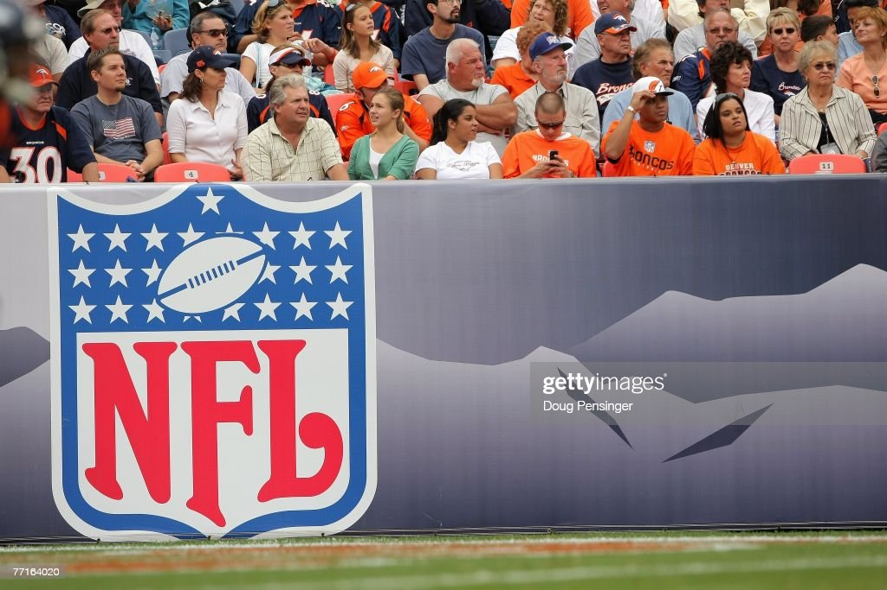

Embed from Getty Images
Doug Pensinger / Getty Images Staff
The first round of free agency for the 2023 NFL offseason has now concluded. Over 150 players have found new homes in the NFL after a flurry of transfers from week to week. Cash is king, location matters, and state taxes are relevant in NFL free agency. Do you like to live in flip-flops and on the beach all year round in Miami or get up and shovel the driveway in Buffalo when it's only five degrees outside? In California, play in the sun? And keep in mind that when they reduce your signing bonus, those state taxes are no laughing matter. Where did every last penny go? Well then these factors become important. These are just a few of the issues that NFL players are thinking about as they get ready and will get ready to enter the free-agent market for future seasons. Yes, money always speaks, and we'll talk about it. What additional considerations do players take into account as they prepare to sign a new contract with a new team in a new city? The players' and their families' lives will be changed by this decision. The selecting procedure is thorough. This proposition must be analyzed from the viewpoint of an NFL player who is about to enter the free market. Therefore, it's critical to remember that the NFL is a business when you or a buddy is upset over one of their favorite players joining a rival team. It's like college recruitment all over again, only with a lot more cash and opportunities to advance one's career.